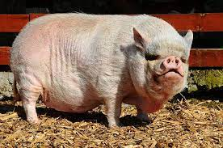

| Animal | Especie | Foto |
|---|---|---|
| Perro | Canino | |
| Gato | Felino | |
| Cocodrilo | Reptil | |
| Cerdo | Porcino |  |
| Perro | Gato | Cocodrilo | Cerdo |
|---|---|---|---|
| Video de Cachorros | Video de Gatos | Video de Cocodrilo cazando | Video de Cerdo |
| Sonido de perro | Sonido de gato | Sonido de cocodrilo | Sonido de cerdo |
| Perros | Gatos | Cocodrilos | Cerdos |
|---|---|---|---|